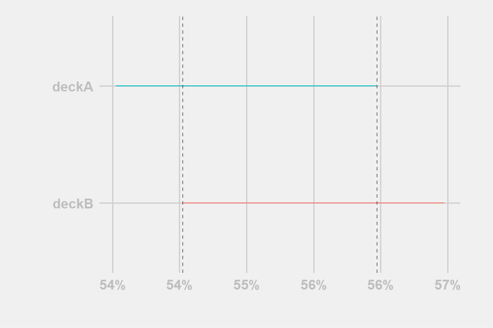
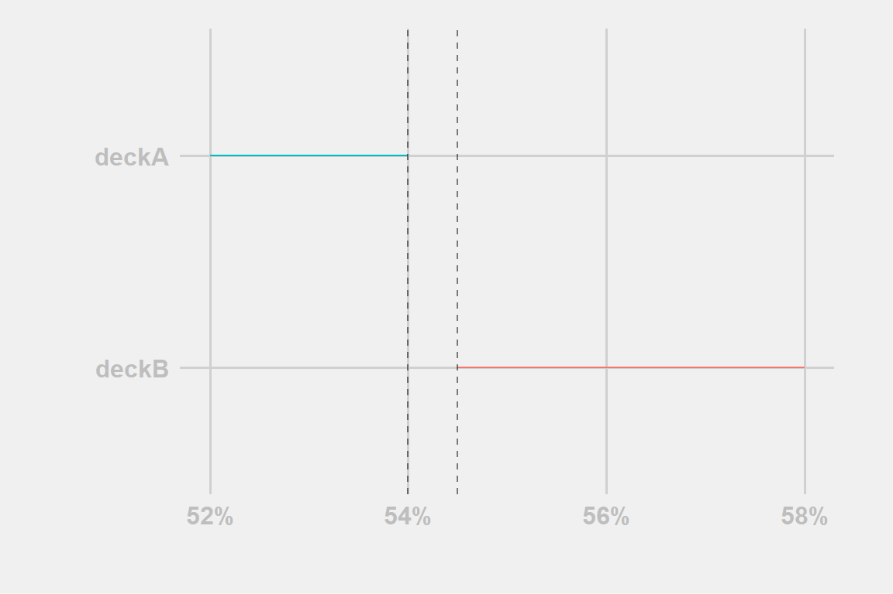
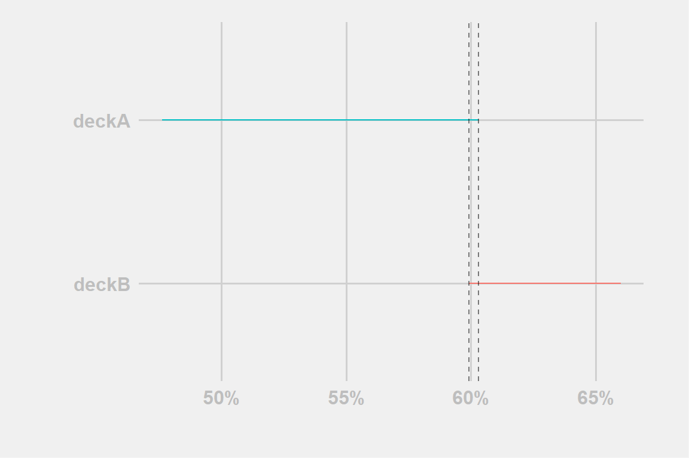
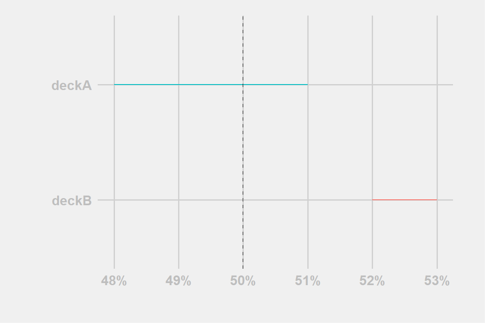
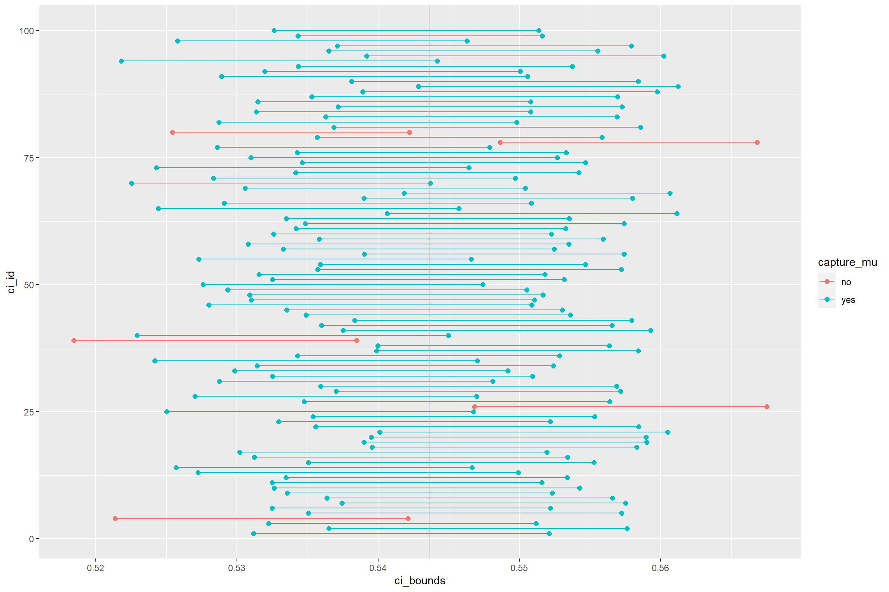
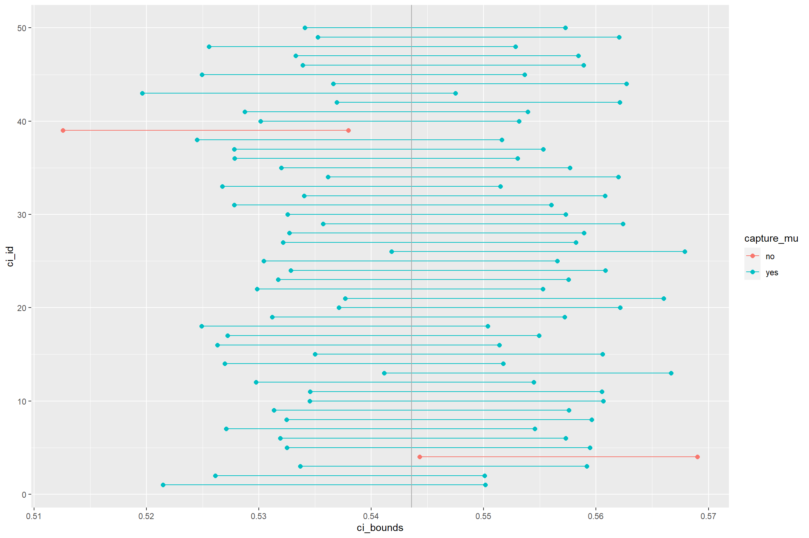

A little guide to understanding and use/read them and why TLC is in the mix?!
Player A: “This deck is way better than yours. You see, it even reached a 55% win-rate at Master this week!”
Player B: “You fool! You clearly didn’t see the latest values as mine is obviously the superior version with a 55.5% win-rate at Master this week!”
Voice in the background: “Little did they know both decks win-rates were actually the same”
For those who use my content one may notice that I use something called Confidence Interval (CI) or similarly those who use Storm deck tracker can see he adds a \(\pm X\) value to a deck win-rate.
Normally a confidence interval is written inside squared brackets
\([lower,upper]\)
and more generally it’s associated to a point estimation, like a win-rate estimation.
A deck with 52% and confidence interval between 51% and 54% is written
52%; CI [51%,54%]
While our intuition may tells us how to read them, it’s also really, really easy to misunderstand them.
Here, we’ll explain what they are, how they are computed, why you should almost always require their use and also why/how you shouldn’t look too much into them.
If the last two points seems a contradiction they are not but we will try to convey the underling reasoning.
Hi, Legna here, while normally I try to write those analysis articles in a publication-style format this post is meant to be an easier read for most players.
I would like to say that this is the first of a series of articles meant to explain some statistical concepts in order to better understand the data and their nuances but I can hardly guarantee it, I will try, but most likely the cadence will be slow. Even this article took weeks not because the content is hard, but mostly because of a combination of little time plus needing to understand what and how to write the content.
As counter-intuitive as it may be we need to start with what is not a confidence interval:
A Confidence Interval (CI) is not the probability that the true value of our estimate in inside a certain interval. For such case the true value is either contained or not and so the probability is either 1 (it’s inside) or 0 (it’s outside)
Let’s say we have a deck with 58.5% WR and CI of [57%, 60%]. A CI doesn’t mean that there is 95% probability that the true win-rate in between 57% and 60%. If the true win-rate is 58% the value is inside the interval and so the probability of being inside it is 100%. If the true value was 56.5% then the probability of the true value being inside the CI was 0%. If, for example if the true value is 58% then it’s contained and the probability is one, if it’s 55% then it’s outside the range and the probability is zero
Note: When we refer to the true-value, the win-rate of our deck we refer to the unknown win-rate that is associated to the deck. It is the value we try to estimate when we divide \(\frac{\#wins}{\#gci_example}\). Yet the value we obtain as said, it’s an estimation, we don’t know how far we are from the actual win-rate.
A CI is a natural extension of a single point estimate (a single value) and it provides information about the variability, stability of our estimate, the win-rate.
Let us take a deck with 1000 gci_example and 600 wins, the 60% win-rate estimate obtained as \(\frac{\#wins}{\#gci_example}\) is a point estimate while the CI is [57.0%,63.0%].
Their use is intrinsically connection with hypothesis testing so CI also provides a rigorous frame about how to interpret them.
Suppose we we would test if the deck win-rate is 60%%.
As we can see that the CI does includes that value 57% < 60% < 63%, then we don’t reject hypothesis that the WR is indeed 60%.
On the other hand, if the CI was, let’s say [54.0%,57.0%] then we would reject the hypothesis that the win-rate is 60%, having support that the true win-rates lies elsewhere.
It’s very important to be careful how to interpret a statistical hyphotesis. One NEVER PROVES something, but it can reject an hypothesis, giving at most support to the opposite but never proving it. Think of SCP-55, all that is known is that it is not round, what shapes does it have are still an infinite amount of alternative options
Now, let us use the example from the introduction.
We have two decks, one with win-rate at 55.5% and one with win-rate at 55%. How can we say with confidence that they do indeed differ?

We simply look at their CI and check if their intervals do overlap or not. It they overlap their difference is not statistically significant.
In Fig:?? the line overlap \(\rightarrow\) we don’t reject the equality of win-rates -> there is support on the equality of win-rates.

We proceed in the same way for the example illustrated in Fig:??
The line don’t overlap \(\rightarrow\) we reject the equality of win-rates \(\rightarrow\) there is support on the inequality of win-rates.
So everything seems pretty easy: lines overlap = no difference, no overlap = different enough…
… well, no, unless you are working on a very important model you don’t want to be as strict and try to consider each case

In Fig:?? the two lines overlap but personally we would reject the equality of win-rates. It happens for a very small section and maybe the sample size is not even that big for deckA. 1
We don’t want to say that sometimes there are no rules, it’s more that things are not so black and white and one must learn to navigate in the infinite sea of grey.
So, after this what I must conclude is that one must decide subjectively each time? Once we set some rules we should try to follow them as much as we can.
While the comparison of decks’ CI one against each other can help us discern significant differences, this is hardly what we would normally suggest to do with them.
We explained how the CI can help us answer whatever or not our deck can support or not a certain hypothesis. But instead of asking if it’s at a certain win-rate or if it differ enough from another deck there is another very basic question that someone would want to know: it my deck actually good? Or to put it differently: does my deck have a positive win-rate?

The rules examples in Fig:?? doesn’t differ from what we previously told and so:
deckB confidence interval is all above the 50% win-rate \(\rightarrow\) we support the hypothesis that the win-rate is indeed positive
deckA confidence interval includes the 50% win-rate \(\rightarrow\) we can’t determine if the win-rate is positive or negative.
If we look too many data we will most likely find in false positive
When one has access to some (continuous) data, one of the easiest statistics we can compute is the sample mean $X $, yet while effective the mean greatly reduce the overall information and we have no idea about the uncertainty of our results as we mentioned in the first example.
If we have a bunch of gci_example results classified as either 0 or 1 a win-rate estimate will be the simple mean \(\bar x = \sum_i^n x_i\)
In order to expand from a point estimation we can switch to an interval estimation
Il grafico con le simulazioni
Add how the number of gci_example required for a better interval gros exponentially
Add sample size OC curve
A confidence interval for a population mean is of the following form x¯±z⋆sn−−√
You should by now be comfortable with calculating the mean and standard deviation of a sample in R. And we know that the sample size is 60. So the only remaining building block is finding the appropriate critical value for a given confidence level. We can use the qnorm function for this task, which will give the critical value associated with a given percentile under the normal distribution. Remember that confidence levels and percentiles are not equivalent. For example, a 95% confidence level refers to the middle 95% of the distribution, and the critical value associated with this p will correspond to the 97.5th percentile.
We can find the critical value for a 95% confidence interal using
# A tibble: 1 × 2
lower upper
<dbl> <dbl>
1 0.534 0.554# A tibble: 1 × 2
lower upper
<dbl> <dbl>
1 0.534 0.554

Review of Confidence Intervals When we compute a confidence interval, we first compute an estimate of a parameter with a statistic.
For example, we draw a random sample then compute the sample mean to estimate the parameter.
With a single sample (or anything short of the whole population) we don’t know where the population mean lies, so we want to localize the population mean within an interval, computed from the data in the sample.
An interval is a range of values (e.g. all real numbers between 4801 and 6801: written [4801, 6801]). A confidence interval is a range of plausible intervals for the parameter. A 95% confidence interval for a parameter is an interval computed by a method guaranteed to successfully cover the parameter 95% of the time (i.e. for 95% of the samples).
We call 95% the “confidence level” for the parameter. Other confidence levels, anything between 0% and 100%, are possible.
As the confidence level increases, what happens to the width of the confidence interval? The width of the confidence interval increases.
As a follow up to the last question, will you be more confident that the population mean lies in a bigger interval, or less confident. You will be more confident that the population mean lies in a bigger interval.
As the sample size increases, what happens to the width of the confidence interval? The confidence level width increases as sample size increases.
In other words, will you be able to localize the population mean better (in a smaller interval) with a larger sample size? Yes.
If the variablility in the population increases, what happens to the width of the confidence interval? The width of the confidence interval increases as variability in the population increases.
In other words, will you be able to localize the population mean better (in a smaller interval) with more variability in the population? No, it will be more difficult to localize population mean with more variability in the population.
Drawing Confidence Intervals Assuming You Know Shape of Sampling Distribution According to the Central Limit Theorem, the sampling distribution for the sample mean has a Normal (bell shaped) distribution. Using this approximation, and the 68-95-99.7 Rule to assign a margin of error (half the width of the confidence interval, centered on sample mean) to be 2 times the standard error (a statistic that estimates the standard deviation of the sampling distribution). We did this in class the Friday before Thanksgiving.
We are 95% confident that the true average size of houses in ci_example lies between the values 8390.28 and 11747.99.
For the confidence interval to be valid, the sample mean must be normally distributed and have standard error s/√n. What conditions must be met for this to be true? For this to be true, sampled observations need to be independent. Independence is more likely if random samplng is used and, if sampling without replacement, the sample size should be less than 10% of the population. The popluation distribution should either be normal or n>30 and the population distribution is not extremely skewed.
Exercise 4: What does 95% confidence mean? This refers to the long term success rate of this method, so it means that 95% of the confidence intervals produced will successfully capture the population parameter of interest, in this case, the mean Lot p of homes in ci_example.
We can’t access the population so we take samples There will be variation across samples There will be sampling errors We go crazy for sampling and we takes lots of sampling and we takes the means for each samples and plot the distribution of the means the particular sample we have may not have have the population values but the sampling distribution will give us the population value the sampling deviation will give us that the sampling deviation should be narrows and the standard deviation of the sampling distribution is the standard error
An interval such as that across a large number of samples we contains the population values How wide should the interval be to contains the population value a lot of times we take a sample and decide to use it
1.96*SE
The estimate and its interval may or may not contain the true population value across a lot of sample if were to set the limits around the estimate around 1.96*SE we are going to hit the population value 95% of SAMPLES
Each bar is a sample that
Intervals that contains the true population value of the paramter in 95% ifsamples
NO - It’s an interval i’m 95% confident that the population estimate falls within the interval it’s an interval where there is a 95% probability that contains the population value! Hyper no! it’s either 1 or 0 but you don’t know which They do not reflect confidence in the value of the population parameter
Assuming that this sample is one of the 95% that yields a confidence interval containing the true value of the parameter
For every standard deviation change of the paramter we have an increase of the effect
In statistics, a sampling distribution or finite-sample distribution is the probability distribution of a given random-sample-based statistic Wikipedia
deckA has 250 gci_example, while deckB has 1000 gci_example↩︎